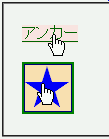
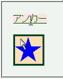

cursorプロパティの初期値はautoであるが、Mozilla/Netscapeでhref属性を持つa要素に cursor: auto; を指定すると初期設定のカーソルとは違うカーソルが割り当てられてしまう。
<p><a href="b062.html" style="cursor:auto;"> アンカー</a></p> <p><a href="b062.html" style="cursor:auto;"> <img src="../img/img01.png" alt="★"></a></p>
アンカー上では cursor: pointer; を指定したときのカーソルと同じカーソル（例えば手の形のカーソル）を使用するはずです。
WinIE6.0での表示（標準モード）
N7.1での表示（標準モード）
Bugzillaでは以下の項目が該当します。
N7.1標準モードおよび互換モード、Moz1.4標準モードおよび互換モード、で不具合の発生を確認しました。